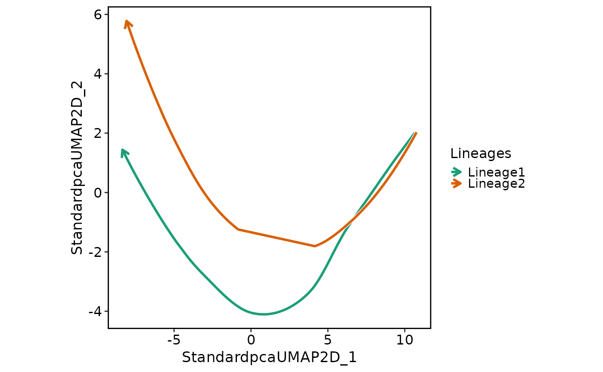
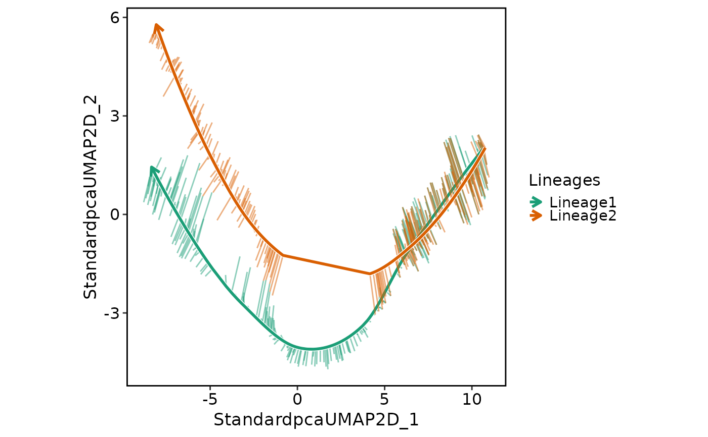

Generate a lineage plot based on the pseudotime.
LineagePlot(
srt,
lineages,
reduction = NULL,
dims = c(1, 2),
cells = NULL,
trim = c(0.01, 0.99),
span = 0.75,
palette = "Dark2",
palcolor = NULL,
lineages_arrow = arrow(length = unit(0.1, "inches")),
linewidth = 1,
line_bg = "white",
line_bg_stroke = 0.5,
whiskers = FALSE,
whiskers_linewidth = 0.5,
whiskers_alpha = 0.5,
aspect.ratio = 1,
title = NULL,
subtitle = NULL,
xlab = NULL,
ylab = NULL,
legend.position = "right",
legend.direction = "vertical",
theme_use = "theme_scop",
theme_args = list(),
return_layer = FALSE,
seed = 11
)An object of class Seurat.
A character vector that specifies the lineages to be included. Typically, use the pseudotime of cells.
An optional string specifying the dimensionality reduction method to use.
A numeric vector of length 2 specifying the dimensions to plot.
An optional character vector specifying the cells to include in the plot.
A numeric vector of length 2 specifying the quantile range of lineages to include in the plot.
A numeric value specifying the span of the loess smoother.
A character string specifying the color palette to use for the lineages.
An optional string specifying the color for the palette.
An arrow object specifying the arrow for lineages.
A numeric value specifying the linewidth for the lineages.
A character string specifying the color for the background lines.
A numeric value specifying the stroke width for the background lines.
A logical value indicating whether to include whiskers in the plot.
A numeric value specifying the linewidth for the whiskers.
A numeric value specifying the transparency for the whiskers.
A numeric value specifying the aspect ratio of the plot.
An optional character string specifying the plot title.
An optional character string specifying the plot subtitle.
An optional character string specifying the x-axis label.
An optional character string specifying the y-axis label.
A character string specifying the position of the legend.
A character string specifying the direction of the legend.
A character string specifying the theme to use for the plot.
A list of additional arguments to pass to the theme function.
A logical value indicating whether to return the plot as a layer.
An optional integer specifying the random seed for reproducibility.
data("pancreas_sub")
pancreas_sub <- RunSlingshot(pancreas_sub, group.by = "SubCellType", reduction = "UMAP", show_plot = FALSE)
LineagePlot(pancreas_sub, lineages = paste0("Lineage", 1:3))

LineagePlot(pancreas_sub, lineages = paste0("Lineage", 1:3), whiskers = TRUE)
